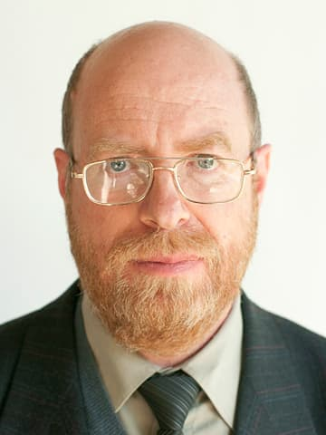
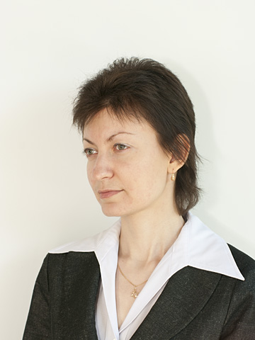
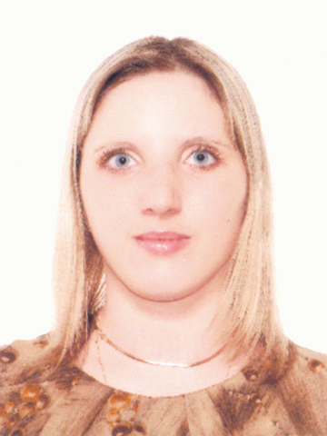
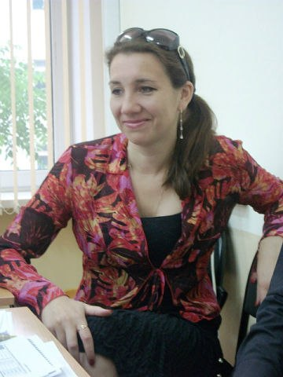
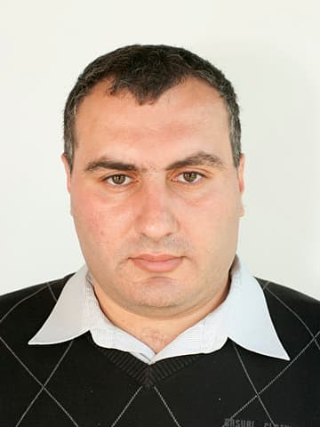
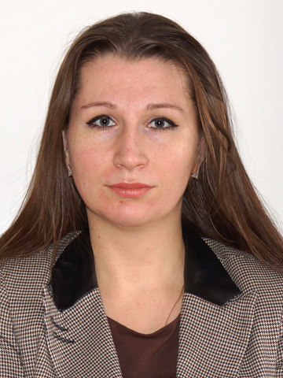
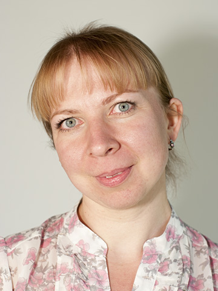
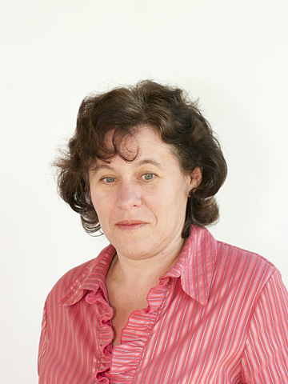
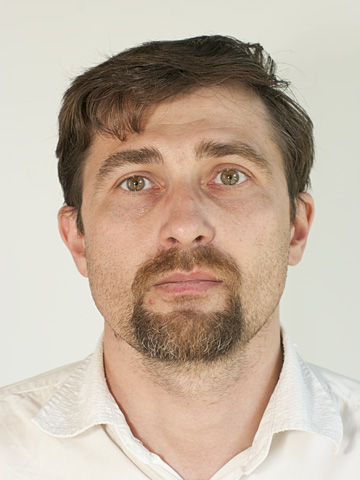

Преподавательский состав
Евельсон Лев Игоревич

- Должность:
- Профессор, заведующий кафедрой
- Образование:
- БИТМ '85, специальность «Динамика и прочность машин»
- Ученая степень:
- Кандидат технических наук
- Дисциплины:
- «Информатика»
- «История развития ИС»
- «Основы теории управления»
- «Теория информационных процессов и систем»
- «Экспертные системы в управлении»
- «Математические модели и методы принятия хозяйственных решений»
- «Корпоративные ИС»
- «Представление знаний в ИС»
- «Компьютерная математика»
- Сфера научных интересов:
- Информационные системы, в т.ч. интеллектуальные ИС
- Анализ данных
- Математическое и компьютерное моделирование в технике, экологии, медицине, экономике.
Патракова Алла Владимировна

- Должность:
- Старший преподаватель
- Образование:
- БГИТА '02, МТФ
- Дисциплины:
- «Информатика»
- «Информационные технологии»
- «Системный анализ и моделирование процессов в техносфере»
- «Компьютерная подготовка»
- «Интернет-технологии ведения бизнеса»
- Сфера научных интересов:
- Время в системах искусственного интеллекта
- Проблема времени в условиях формирования глобального техногенного общества и ноосферного перехода
- Техносфера как объект философского и научного исследования
Рыжикова Елена Геннадьевна

- Должность:
- Старший преподаватель
- Образование:
- БГУ'03, бакалавр образования по направлению «Естествознание»
- БГУ'04, учитель математики и информатики
- Дисциплины:
- «Информатика»
- «Базы данных»
- «Методы оптимизации»
- «Численные методы в расчётах»
- «Математическое моделирование»
- «Информационные технологии в управлении»
- «Теория системного анализа и принятия решений»
- Сфера научных интересов:
- Дистанционные технологии обучения
- Математическое и компьютерное моделирование
Юркова Ольга Николаевна

- Должность:
- Доцент
- Ученая степень:
- Кандидат экономических наук
- Образование:
- БГУ'04, специальность «Экономика» (квалификация «учитель экономики и информатики»)
- БГУ'08, преподаватель высшей школы
- Дисциплины:
- «Информатика»
- «Информационные технологии в экономике»
- «Информационные технологии в управлении»
- «Компьютерная подготовка»
- «Корпоративные ИС»
- Сфера научных интересов:
- Информационные технологии и системы
- Анализ данных
- Эффективность использования производственного потенциала предприятий
Прусс Борис Наумович

- Должность:
- Доцент
- Ученая степень:
- Кандидат технических наук
- Образование:
- БГТУ '05, специальность «Информатика и ПО»
- Дисциплины:
- «Экономико-правовые основы рынка ПО»
- «Информатика»
- «Информационные технологии в экономике»
- Сфера научных интересов:
- Трибология
- Детали машин
Алексеева Екатерина Викторовна

- Должность:
- Ассистент
- Образование:
- БГТУ'06, специальность «Триботехника»
- БГТУ'06, дополнительное образование «Переводчик в сфере профессиональной коммуникации»
- Дисциплины:
- «Информатика»
- «Геометрическое моделирование в САПР»
- «Управление данными»
- «Интеллектуальные информационные системы»
- Сфера научных интересов:
- Триботехническое материаловедение
- Прикладное программирование
Теремкова Ирина Ивановна

- Должность:
- Ассистент
- Образование:
- БГУ '05, бакалавр по направлению «Физико-математическое образование»
- БГУ '07, магистр по направлению «Физико-математическое образование»
- Дисциплины:
- «Информационные технологии»
- «Экспертные системы в управлении»
- «Математические модели и методы принятия хозяйственных решений»
- «Информатика»
- «Компьютерная математика»
- «СУБД»
- Сфера научных интересов:
- Имитационное моделирование
- Искусственный интеллект
- Проблемы педагогики высшей школы
Маринин Иван Валерьевич

- Должность:
- Старший преподаватель
- Образование:
- БГТУ '06, специальность «Триботехника»
- БГТУ '08, дополнительное образование «Переводчик в сфере профессиональной деятельности»
- Дисциплины:
- «Информатика»
- «Администрирование в ИС»
- «Информационные сети»
- Сфера научных интересов:
- Триботехника
- Применение достижений триботехники в промышленности
- Триботехническое материаловедение
Плотников Михаил Викторович

- Должность:
- Доцент
- Ученая степень:
- Кандидат химических наук
- Образование:
- МГУ '76, специальность «Химия»
- Дисциплины:
- «Архитектура ЭВМ и систем»
- «Информационная безопасность и защита информации»
- «Методы и средства защиты компьютерной информации»
- «Операционные системы»
- Сфера научных интересов:
- Применение ИТ
- Физико-химические исследования твердых тел
Рафаловская Майя Яковлевна

- Должность:
- Доцент
- Ученая степень:
- Кандидат технических наук
- Образование:
- БИТМ '85, специальность «Динамика и прочность машин»
- Дисциплины:
- «Компьютерная геометрия и графика»
- «Базы данных»
- «Статистическое моделирование»
- «Теория информационных процессов и систем»
- «Моделирование систем»
- «Геометрическое моделирование САПР»
- «Электронное делопроизводство»
- Сфера научных интересов:
- САПР
- Базы данных
- Анализ данных (статистика)
- Моделирование систем
Шевченко Константин Викторович

- Должность:
- Доцент
- Ученая степень:
- Кандидат технических наук
- Образование:
- БИТМ '96, специальность «Динамика и прочность машин»
- Дисциплины:
- «Информационные технологии»
- «Проектирование ИС»
- Сфера научных интересов:
- Контактные задачи
- МКЭ
- Генетические алгоритмы
© Кафедра ИТ БГИТА, 2014 г.
Лицензия на право ведения образовательной деятельности №1713 от 15 августа 2011 года.
Хостинг от